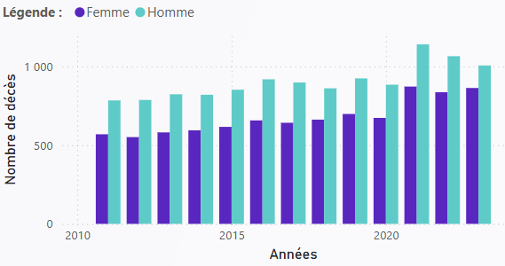
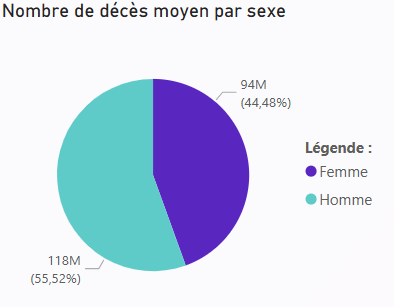

Les décès par année (Nouvelle-Calédonie)
Depuis 2021, la mort concerne de plus en plus les hommes...
Cette visualisation montre la répartition des décès par sexe de 2010 à 2023.
La moyenne des décès (Nouvelle-Calédonie)
On peut appercevoir que les hommes meurt trop, c'est chiant.
Peace & love rasta life
